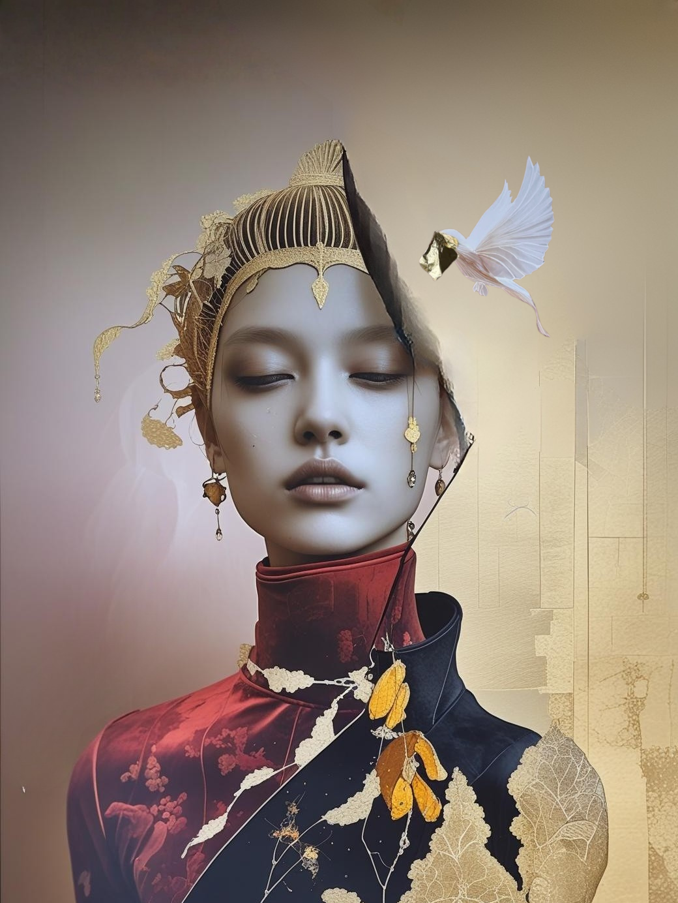
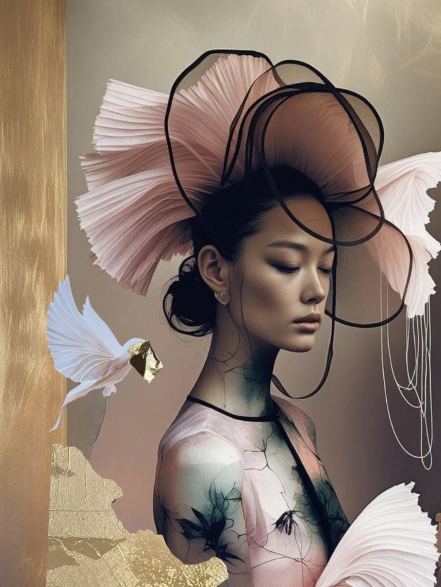
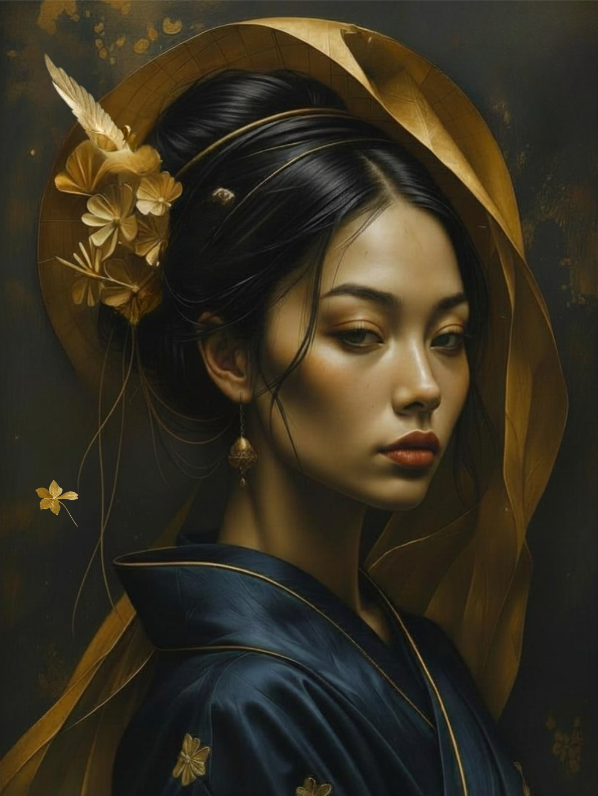
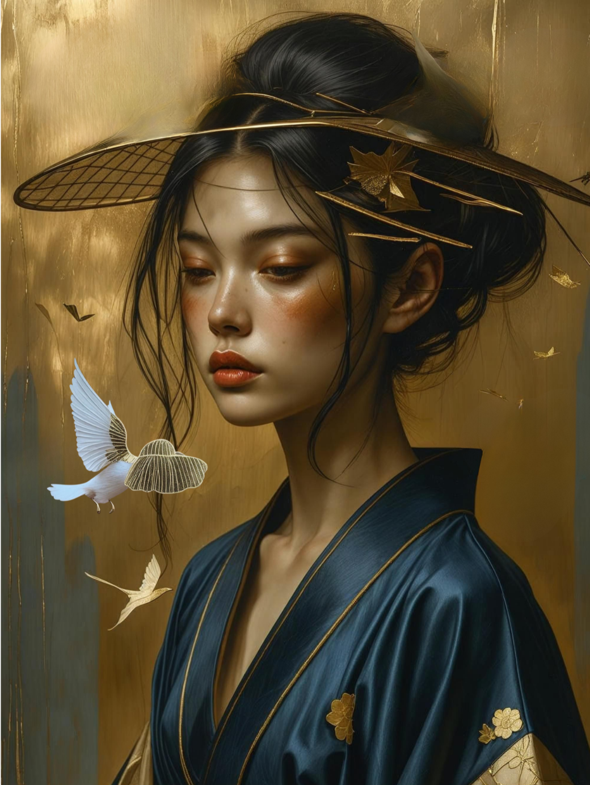
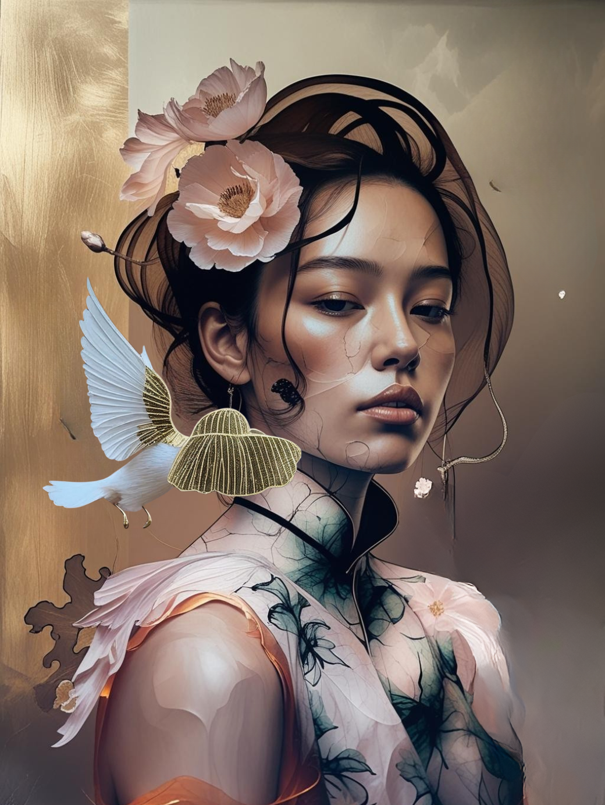
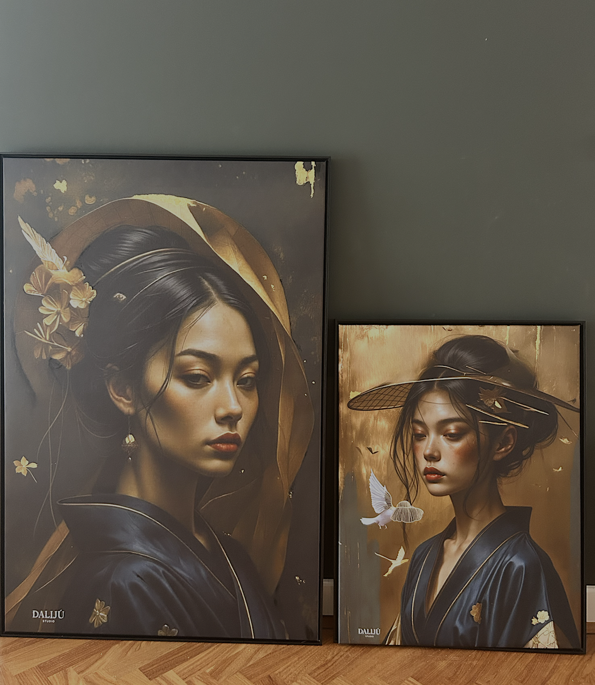

View Work





Dalijú Studio creates contemporary surreal artworks. Inspired by symbolism, femininity and organic form. Inspired by the dahlia. A symbol of layered beauty and quiet strength. Each piece blends minimal composition with animals, texture and gold leaf. Hand-finished on museum-quality canvas.
Enquire about a work